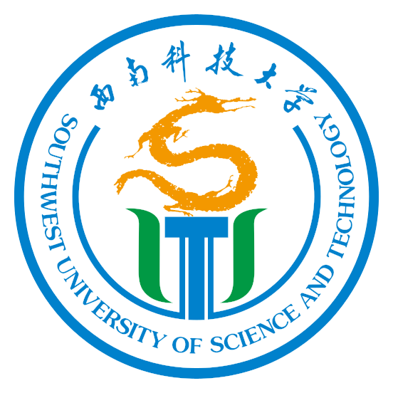
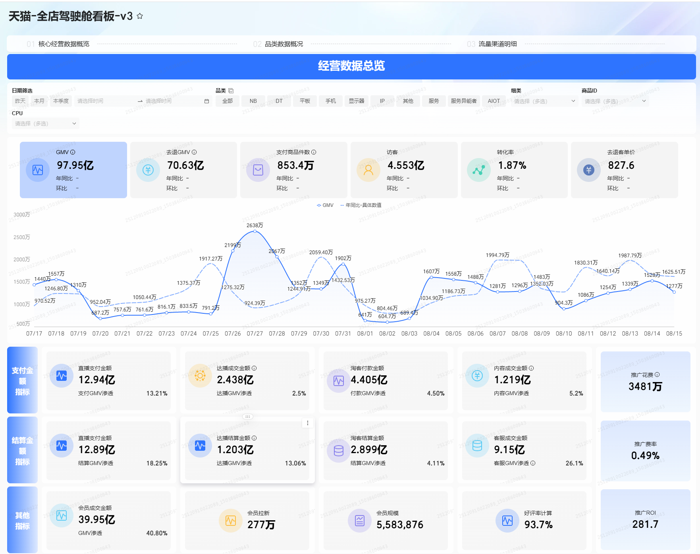
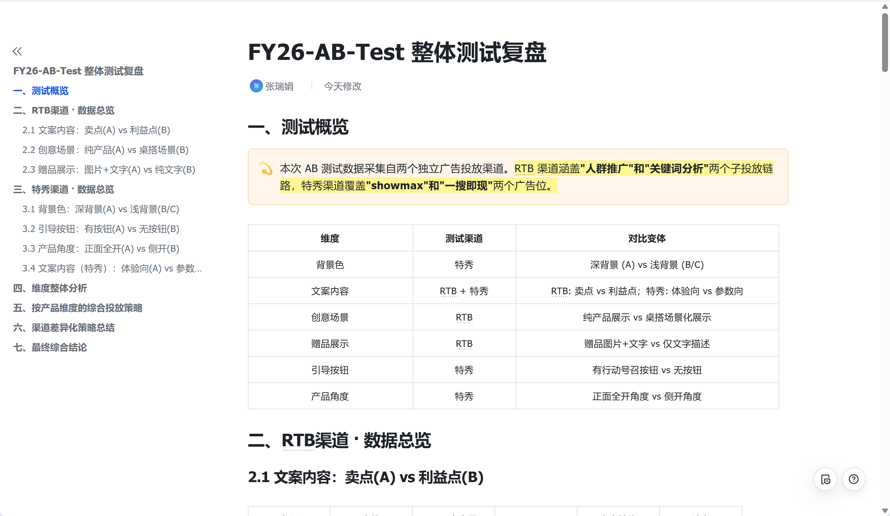
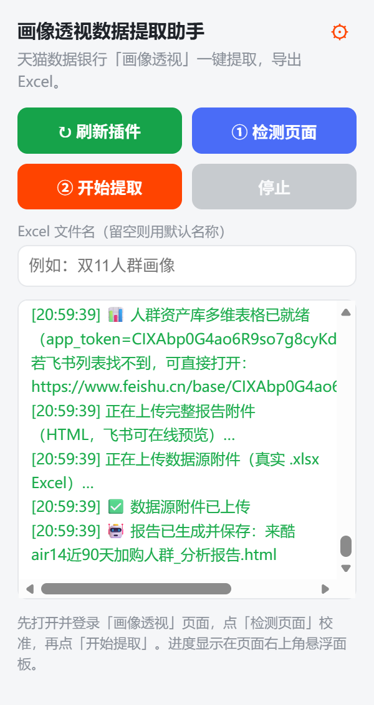
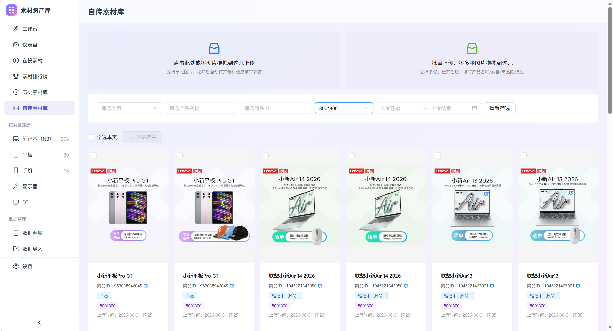
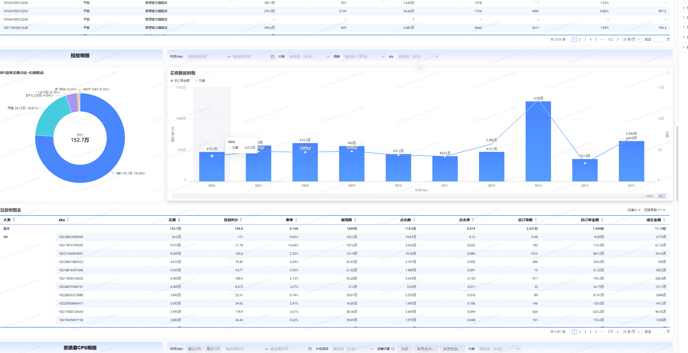
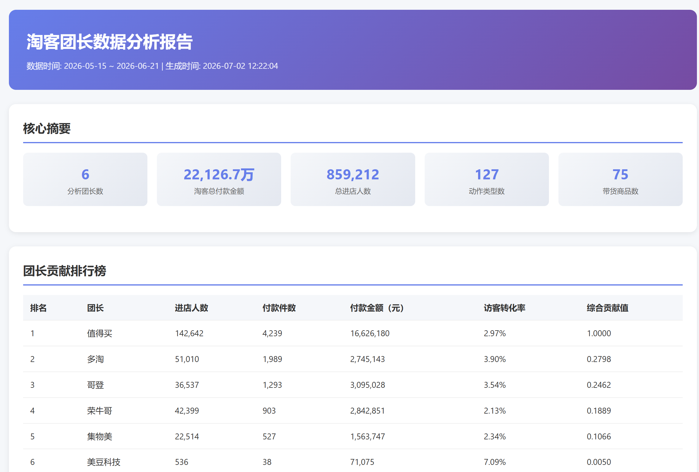
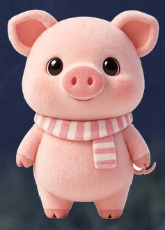

AI 插件：人群画像数据提取助手
联想天猫官旗 · 2026
痛点：品牌数据银行人群画像分析是高频任务，但取数、整理、命名、出报告操作重复繁琐，单次耗时约 1h。
方案：用 CodeBuddy / Codex 把流程工具化，开发浏览器插件：自动提取画像数据 → 智能命名 → 调用大模型 API 按模板生成 HTML 报告。
结果：人群分析耗时从 1h 压缩至 2min，效率提升 90%+；插件已推广至团队 50+ 人使用，沉淀为可复用的工具化落地方法。

EDUCATION & SKILLS
211 · 保研
城乡规划学 · 硕士
全日制硕士
本科
城乡规划学 · 本科
技能特长
EXPERIENCE
电商运营实习生 · 销售营销部
团队中的数据支撑者：统一直播、万相台、淘客、达播等多渠道数据口径，搭建 BI 看板并沉淀 素材资产库；618 期间跑素材 A/B 赛马，CTR 创历史新高；独立开发浏览器插件把人群分层分析从 1h 压到 2min。
0
累计上线看板
0
独立上线看板
0
大促素材提升
0
自动化插件提效
数据产品运营：梳理直播、万相台、淘客等业务需求，基于 Quick BI 和 SQL 从 0 到 1 搭建数据看板，覆盖 GMV、CPC 等指标，累计协助上线 7 个 BI 看板，覆盖六大业务板块，解决渠道数据割裂、数据口径不一问题，为业务提供决策依据。
广告投放优化：围绕 618 大促节奏进行两轮素材 A/B 赛马测试，基于 CTR 及时下架低效素材、放大高潜素材，大促期间 CTR 同比提升 50%+，平均 CTR 为 5.76% 创历史新高，复盘沉淀高价值素材资产库并输出 SOP。
用户运营：针对天猫店铺的 RTB 推广计划人群包转化低下问题，借助品牌数据银行挖掘用户画像数据定位低效人群，关停泛流量包，重新圈选高潜人群策略，优化后转化率由 3.55% 提升至 4.63%，有效降低无效预算消耗。
AIGC 工具自研：针对画像数据取数繁琐、报告产出慢的业务痛点，独立开发自动化插件，通过不断迭代，实现页面数据一键抓取清洗、智能命名和报告自动生成，人群分析耗时由 1h 压缩至 2min，效率提升 90%+，推广至团队 50 余人使用。
智能化建设：针对阿里妈妈百灵平台素材与投放数据割裂、缺少打标能力的痛点，搭建素材资产库，支持多维度筛选、效果排行及标记，实现优质素材快速复用；通过 Agent 接入数据库生成 AI 日报并定时推送，替代手工整理。
广告 AM 运营 · 程序化广告 BU
负责 Alibaba 海外广告投放数据分析与周报输出。定位美洲超耗问题并输出优化策略，单周超耗从 2728 美元降至 689 美元；用 Python/VBA 实现自动化提效，工作耗时压缩 50%。
$2,039
单周规避结算损失
50%
自动化提效
0 类
标准化 SOP
海外投放分析：负责 Alibaba 海外程序化广告投放数据监控，跟踪 ROAS、CPI、CTR 等核心指标，定位异常并输出调整建议。
超耗管控：发现美洲市场单周超耗问题，通过预算分配与素材调整，将超耗从 $2,728 压到 $689，规避结算损失约 $2,039。
自动化提效：用 Python/VBA 把日报、周报、素材统计等重复工作脚本化，工作耗时整体压缩约 50%。
SOP 沉淀：沉淀素材审核、投放监控、周报输出等 7 类标准化 SOP，帮助新人快速上手并减少出错。
电商运营
负责小红书店铺运营、数据分析与营销活动策划。在职期间日均浏览量增 12%，月 GMV 环比增加 25.07%；官号涨粉 10000+，建联 20+ 达人。
25.07%
月 GMV 环比增长
10,000+
官号涨粉
20+
达人建联
店铺运营：负责小红书店铺日常运营、选品上架与活动策划，通过笔记与活动联动提升日均浏览量 12%。
数据分析：跟踪 GMV、ROI、加购转化等核心指标，定位流量与转化瓶颈，月 GMV 环比增长 25.07%。
内容增长：输出笔记选题与文案，配合账号人设与热点，在职期间官号涨粉 10,000+。
达人建联：筛选、触达并维护 20+ 达人，完成样品寄送与内容排期，提升种草转化效率。
PROJECTS
以下为部分代表性项目展示。

从 0 到 1 搭建 6+ 套自动化看板，覆盖全店、大曝光、国补订单、流量渠道、淘客、直播、万相台等核心模块，统一数据口径，支撑大促盯盘与周报复盘。

围绕 180w 预算开展两轮素材赛马，覆盖背景色、文案、场景、赠品等 5 个维度，整体 CTR 提升至 5.76%，同比提升 50%+。

自研浏览器插件一键抓取品牌数据银行人群画像、自动生成分析报告（人群分析耗时 1h→2min）；结合 30 位已购用户深访输出学生党、职场悦己党、专业派三大画像，指导分层定向触达与再营销。

从 0 到 1 产品化的电商素材资产库，Excel 一键导入、多模态 AI 自动识别与检索，打通导入-管理-分析全链路，已完成原生改造并投入日常使用。
EXPLORE
WorkBuddy / CodeBuddy
辅助看板搭建、数据解读、业务报告生成与素材资产库搭建，1h 工作压缩至 20min 内。
Codex
辅助浏览器插件开发、SQL 与自动化脚本编写。
DeepSeek
复杂业务问题拆解、报告框架与人群画像结论生成。
生意管家
日报/周报自动生成、GMV/CPC/花费/ROAS 等核心指标播报，缩短信息汇总时间。

日常数据看板与报告
点开看完整看板与报告
素材资产库
投放素材与数据资产 · 点开看介绍

电商日报 / 周报系统
AI 自动生成报告 · 点开看介绍
「随心所记」
AI 生产力小工具 · 点开看演示
「画像透视」插件
一键提取 · AI 自动出报告 · 点开看演示

「呆呆猪桌宠」
开源桌面宠物 · 点开看演示
把 AI 当成日常工作流的一部分：用 AI 整理知识库、跑数据报告、生成周报，把重复工作交给工具，把精力留给判断和决策。
APPENDIX